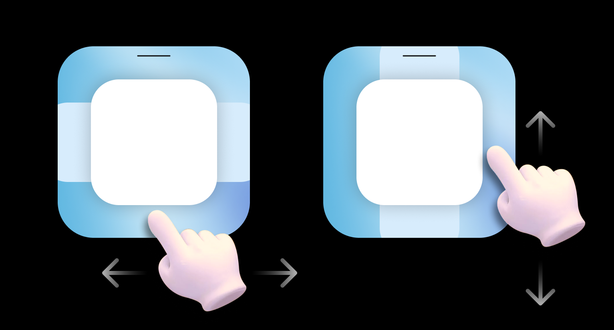
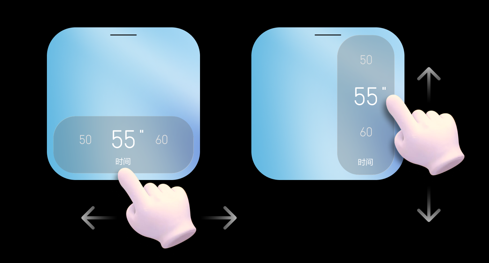
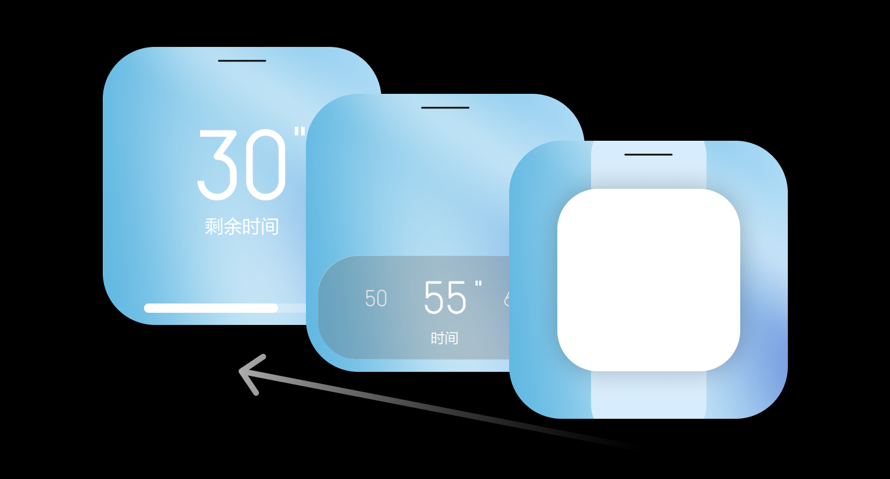
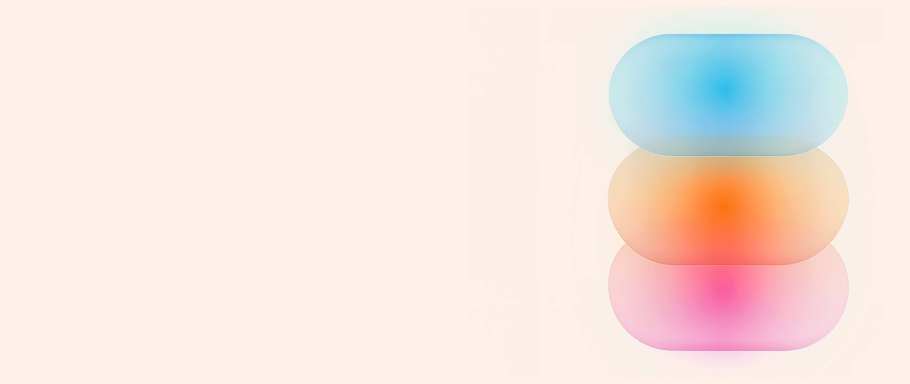

X
X · 位置与情境
我在哪里操作？
组织内容、设备与服务之间的位置和流转，保持关键对象与操作锚点稳定。
位置 · 导航 · 空间迁移 · 跨设备连续性
在 Leader 设备界面中，X 决定首要内容放在哪里，Y 决定一次展示多少信息，Z 决定什么内容应该来到用户面前。三条轴共同定义页面结构与交互节奏。
XYZ 不是界面样式，而是用户理解信息、移动注意力和进入任务的结构。其不只有单一方向性，可根据具体的硬件特性及交互特点进行转变，但必须清晰的展示出交互结构和节奏。

组织内容、设备与服务之间的位置和流转，保持关键对象与操作锚点稳定。
位置 · 导航 · 空间迁移 · 跨设备连续性

控制从总览到细节的信息密度、展开与阅读节奏，让复杂内容按需出现。
概览 · 展开 · 纵向层次 · 渐进披露

通过遮挡、材质、阴影和前后关系表达任务优先级。深度只用于分离重要内容。
前后景 · 焦点 · 临时浮层 · 注意力引导
随着用户在交互中的深入，内容在视觉与概念层面上逐层展开更深的层次。

将关键状态与主操作放在用户自然视线和首屏核心区域；边缘区域不放置高对比动态干扰。
遮挡、阴影、材质和缩放必须共同指向同一前后关系；禁止用冲突的视觉提示伪造层级。
弹窗或关键任务来到前景时，背景应退后并降低竞争；关闭后恢复原有层级和焦点。
深度适合分离大型且重要的元素，不用于装饰小图标或普通文本；避免频繁切换焦点距离。
控件之间不得重叠，悬停、选中与聚焦效果出现后仍需保持可辨识和可操作。